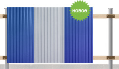

Спецпредложение
Компания «Тримет» стремится сделать работу с металлом более простой и доступной. Используя наши стеновые материалы и металлопрокат, Вы можете самостоятельно изготовить заборные секции.
|
 Схема заборной секции |
При изготовлении типичных заборных секций используется: |
| Деталь | Материал | Размер |
|---|---|---|
| Вертикальный столб | Труба профильная 80 × 80 мм Труба круглая 76, 89 мм |
3 м |
| Прожилины | Труба профильная 40 × 40 мм, 40 × 20 мм | 3 м |
| Заполнение |
Профнастил:
|
1,2 × 2 (1,8) м |
Дополнительную информацию можно получить по телефонам: